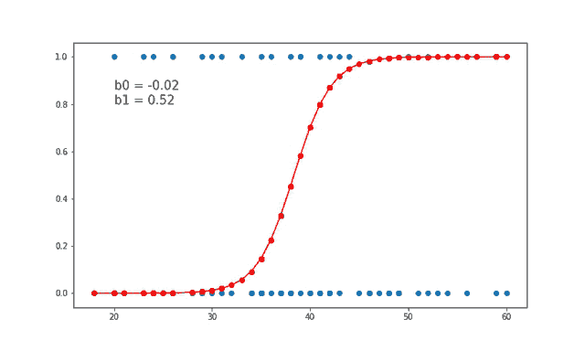

Logistic Regression uses the following function:
As stated in other pages, regression algorithms attempt to model the relationship between in independent and dependent variables. In the case of logistic regression we do a regression to fit a binary classification.
I did some research where we were trying to predict Student Success. The question was "Why do some students graduate and others dont?" To try to answer this we looked at certain courses and investigated how big of an impact that course had in predicting whether a student would graduate. We found that logistic regression was a very powerful tool and with the right feautres we were able to predict graduation with approximately 70% accuracy.

Using Logistic Regression we were able to see that an individual's SAT score was a terrible predictor of Student Success.